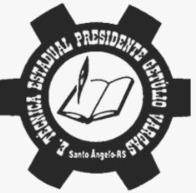

Santo Ângelo - RS
Formando profissionais para o futuro com excelência, inovação e compromisso social. Localizada no coração de Santo Ângelo, a ETE é referência em educação profissional e tecnológica.
Conheça nossos Cursosde história e excelência no ensino técnico
formados anualmente em cursos técnicos
reconhecida como uma das melhores escolas públicas do RS